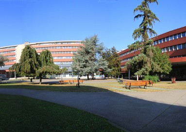
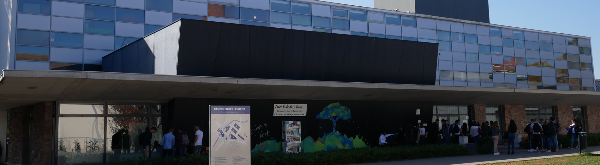

Bonjour je m’appelle Ethan Coulon j’ai 19 ans et j’habite à Colmar. J’ai un frère qui s’appelle Quentin Coulon et qui à 21 ans. Je suis actuellement en BTS SIO option SLAM (Solution Logiciel et application métier) à Camille Sée.
Je suis allé au collège Hector Berlioz à Colmar et j’ai effectué mes 4 ans la bas. Au collège j'avais beaucoup de facilité à apprendre mes leçons, comprendre mes cours et avoir de bonne note. Ma matière préféré est les mathématiques et c'est pour ça que je voulais devenir professeur de mathématiques. Ma matière que je déteste est l'art-plastique car je n'aime pas trop dessiner. En 3ème j’ai fait mon brevet et obtenu avec la mention bien et presque très bien. Ensuite je suis parti sur une seconde générale dans le domaine scientifique.
 J’ai éffectué mon année de seconde générale au lycée Bartholdi à Colmar. Arrivé en première j’ai choisi les spécialités mathématique, physique chimie et science de l’ingénieur car je voulait devenir soit professeur de mathématique soit dans l’ingénierie. L'option Science de l'ingénieur étant dispensé au lycée Blaise Pascal donc j'ai dû changer de lycée Arrivé en terminale j’ai choisi de garder les spécialités math et science de l’ingénieur avec l’option math expert pour ensuite aller en prépa ingénieur ou mathématique. J’ai décidé d’enlever la spécialité physique car cela ne me convenait pas et avec la spécialité science de l’ingénieur il y a 2 heures de physique chimie. Arrivé au moment des veux j’ai décider de demander une prépa MPSI à Mulhouse et Kleber à Strasbourg et un but RT à l’IUT de Colmar. J’ai obtenu mon bac en juillet et j’ai été accepté en réseau et télécommunication à l’IUT de Colmar pour changer de voie et partir sur de l’informatique.

J’ai décidé d’aller en BUT RT à l'IUT de Colmar car je suis passionné d'informatique depuis tout petit et mon parcours ma permis de valider mon choix et que cette établissement me donne beaucoup d’opportunité pour mon futur métier.
Cette filière se déroule en 3 ans (BUT) avec en 2ème année un choix de spécialité et une possibilité d’alternance.
A la suite de ma première année de BUT RT j'ai décidé de changer d'établissemnt et d'aller en première année de BTS SIO à Camille option SLAM pour me consacrer sur dévellopement informatique. Cette filière se déroule en 2ans avec en première année 5 semaines de stage et en deuxième année un choix d'option entre le SISR (Solutions d'Infrastructures, Systèmes et Réseaux ) et SLAM (Solution logiciel et application métier). J'ai décidé de prendre l'option SLAM car je voudrais devenir dévelloppeur web
Mon stage Rectorat de Strasbourg service dsi_dvt du 27 mai février au 28 juin 2025
Stage RectoratMon stage à Meosis du 24 février au 4 avril 2025
Stage Meosis